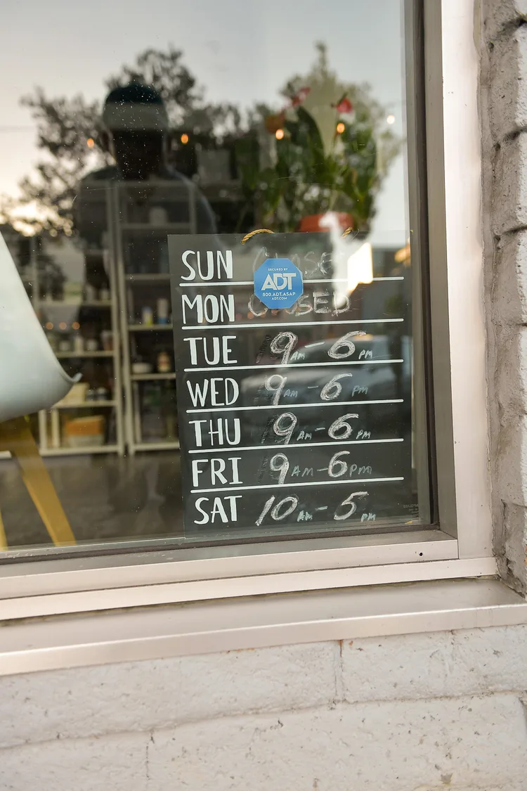
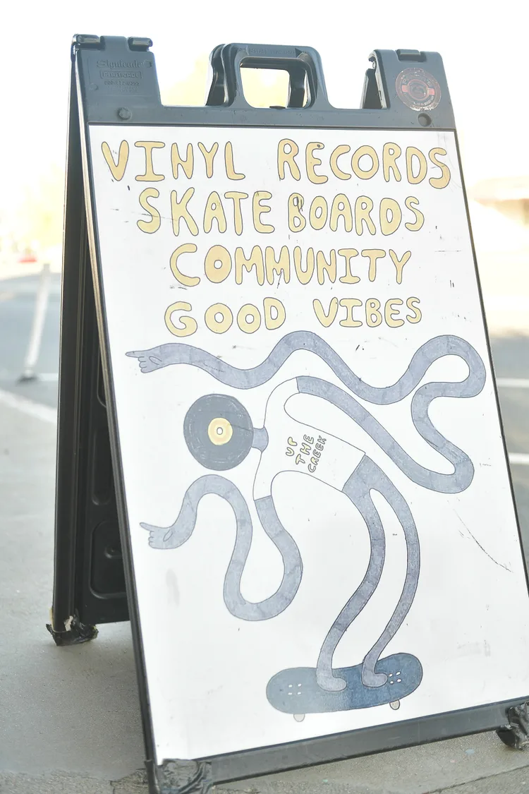
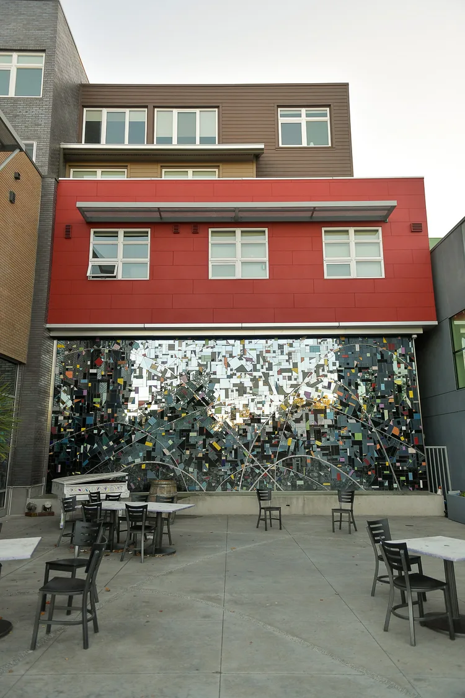

Reptify Field Notes · Walnut Creek, California
Walnut Creek businesses know how to be seen. The question is what happens after someone notices them?
Walk through Walnut Creek and the evidence is everywhere. Restaurants open onto the sidewalk. Wellness businesses explain their services through the glass. A handwritten board tells you when to come back. A sign points toward an entrance. A storefront tells you what it sells before you ever touch the door.
The physical city is already doing a remarkable amount of communication.
Online, the same clarity is harder to guarantee.
Reptify Media looks at what happens between being noticed and becoming the obvious next choice.

Walnut Creek already understands presence.
Businesses here announce themselves through architecture, windows, patios, signs, entrances and the small details people notice while moving through the city.
A restaurant courtyard can feel like an invitation before anyone reads the menu. A storefront can tell you what kind of experience waits inside. An old sign can tell you that a business has been part of the area for decades.
None of these things are particularly complicated. They simply help someone understand where they are and what they are looking at.

That matters because being found has always started with signals.
The signals have simply multiplied.
A person walking through Walnut Creek sees the sign above the door. Someone at home sees a Google result. Another person opens Maps. Someone else asks an AI assistant. Another discovers the business through reviews, a service page, social media, or a recommendation.
Same business. Different front doors.
The storefront is already a user interface.
Look closely at a useful storefront and it answers questions before anyone has to ask them. What is this place? What does it offer? Is it for me? Can I walk in? When is it open?
B12 Love Lounge does much of that before a conversation ever begins. Its name is visible from the street. The windows explain the offer. The entrance is identifiable. The space itself provides context.
Then, tucked into the window, something much simpler does an important job.


Someone wrote the hours on a board.
Nothing sophisticated. But it closes an open loop: if I come back, will you be here?
Tuesday through Friday, 9–6. Saturday, 10–5. Question answered.
That small board is doing what every useful business presence should do: remove uncertainty before uncertainty becomes friction.
Sometimes clarity is almost embarrassingly simple.
One of the clearest messages we found in Walnut Creek does not require a marketing framework. We Buy Records.
Nearby, a sidewalk sign goes further: Vinyl records. Skateboards. Community. Good vibes.
There is very little to decode. If you have records to sell, you know you are in the right place. If you are interested in records or skateboards, there is probably something inside worth seeing.
Good communication often works like this. It does not try to say everything. It answers the question of the person standing in front of it.


Search begins in much the same way.
People rarely begin by looking for a company’s mission statement. They begin with intent. They need a service, a product, a place, an answer, an appointment, a repair, a restaurant, a treatment, or someone nearby who can help.
The businesses that become easiest to find are often the businesses that become easiest to understand.
Sometimes the most useful message is simply where to go.
An entrance sign does not persuade anyone. Neither does a building directory. They orient. They appear at exactly the point where someone might otherwise hesitate.
That is an underrated part of customer experience. The person has already decided to continue. The business simply needs to make the next step clear.
Digital experiences need the same discipline. When someone is ready to call, book, ask a question, request a quote, or learn more, the next step should not become another problem to solve.

Online, those questions don’t disappear. They become searches.
A person might search for a med spa in Walnut Creek, IV therapy nearby, an aesthetics clinic, a restaurant downtown, a professional service, business hours, an appointment, or simply the best place nearby for what they need.
Increasingly, they may not visit ten websites to figure it out. Google summarizes. Maps recommends. AI assistants answer and compare.
Search systems gather information from websites, business profiles, reviews, directories, structured data, local citations and other sources they trust.
This is where traditional SEO, local search, answer engine optimization and generative engine optimization begin to overlap. Not because businesses should stuff more keywords into their websites. Because businesses need to become easier to understand.
Search engines need to understand what the business does. AI systems need enough reliable information to describe it confidently. Customers need much of the same information expressed clearly enough to make a decision.
The goal is not more digital noise. It is clarity wherever the business can be discovered.

A sign above the door isn’t enough anymore.
From across the street, some names are unmistakable. That is physical visibility.
But someone three miles away does not see the façade. They encounter another version of the business: its Google Business Profile, website, reviews, service pages, social presence, directory listings, photographs, and whatever information a search or AI system can confidently connect to it.
Together, those pieces form another storefront. One made of information.
When those pieces agree with one another, the business becomes easier to understand. When they do not, the customer has to do the work. And every unanswered question creates another opportunity to stop.

This is digital friction.
Digital friction is rarely dramatic. Usually, it is ordinary.
An outdated business hour. A service buried several clicks deep. A beautiful website that never clearly explains what happens next. A Google listing that says one thing while the website says another. A phone call nobody answers. A form submitted without useful follow-up.
Or a business that offers exactly what someone needs but has not given search engines or AI systems enough reliable information to understand that.
Individually, these things seem small. Together, they shape whether attention becomes action.
Walnut Creek doesn’t need more digital noise. It needs the online equivalent of a useful storefront: clear enough to understand, useful enough to trust, and easy enough to act on.
For one business, that may mean strengthening its local search presence and making its information more consistent. For another, it may mean rebuilding part of the website around the questions customers actually ask. Another may need a focused microsite around an important service, audience, location, or offer. Another may already have strong visibility and a good website, but opportunities disappear when nobody answers the phone.
The technology changes. The job doesn’t. Help the person standing outside the door know what to do next.
Where Reptify fits.
Reptify Media works on the systems behind that experience.
AI Visibility helps businesses become easier for search engines, local platforms and emerging AI discovery systems to understand. Smart Web Presence makes what customers find clearer, more useful and easier to act on. AI Front Desk and AI Workforce systems help when discovery becomes a call, message, question, booking request or follow-up.
We do not begin by assuming every business needs all of them. We look for where the customer journey becomes uncertain. Then we fix the part that actually needs fixing.
Sometimes that means better information. Sometimes a better page. Sometimes a focused microsite. Sometimes better follow-up. And sometimes someone — human or AI — simply needs to answer.

Built from the street, not from a search report.
This page began with a camera and a walk through Walnut Creek. The photographs here are not stock images selected because they look vaguely like Northern California. They are storefronts, signs, windows, entrances, patios, directories and small details encountered here.
That distinction matters. Because before recommending another campaign, another piece of software or another AI tool, there is a more basic question worth asking: what is the customer actually experiencing?
On the sidewalk. In search. On the website. On the phone. After the form is submitted.
Those experiences are connected. Useful digital strategy begins by seeing the connection.
For Walnut Creek businesses.
If you operate a local business in Walnut Creek, you may not need more marketing. You may need to know where people are getting stuck.
Reptify’s Digital Friction Audit looks at the journey from discovery to contact: local search, website clarity, service information, AI visibility, calls, inquiries and follow-up.
The purpose is not to prescribe more technology. It is to identify the places worth fixing first.
No transformation theater. No AI for the sake of saying AI. Just fewer unnecessary obstacles between “I found you” and “I’d like to become a customer.”
Request a Digital Friction AuditRequest a Digital Friction Audit
Reptify Media · Walnut Creek, California